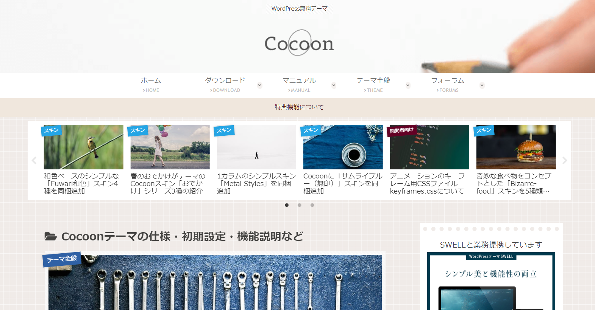
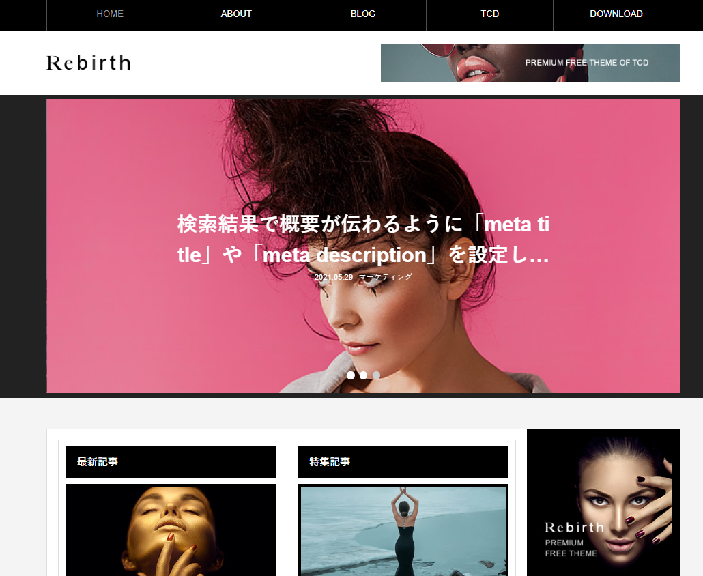

ワードプレスを始めたいけれども、「続けられるかよくわからないことに出来れば費用はかけたくない」そんな方も多いと思います。
少しでもコストを抑えてブログ作りを始めたい方のために、このページでは人気の無料テーマをまとめてみました。
人気の無料ワードプレステーマはそこまで多くありません。実質3～5つほどのテーマに人気が偏っています。 ここではそれぞれの無料テーマの特徴と違いについてわかりやすく解説しています。
まず、テーマを選ぶ上で大切な要素や比較ポイントを説明してみます。
2018年に登場したブロックエディター（グーテンベルク）は当初、その使いにくさから不人気でしたが、年々その利便性が高まっています。 いまからブログを始めるならブロックエディターに完全対応しているテーマを選びましょう。
正直なところクラシックエディターを使っている人も多いと思いますが、 Swellなどの登場によってクラシックエディターよりもブロックエディターの方が簡単にかつスピーディーに記事を作成できるようになってきたと思います。
無料テーマでも有料テーマでもこれからのワードプレステーマ選びはブロックエディターに完全対応していてテーマ専用のオリジナルブロックが多いテーマを選んだ方が良いでしょう。
ブロックエディターで大事なのはオリジナルの専用ブロックの充実さ。と言えます。例えば「吹き出し」「アイコン付きボックス」「ステップ説明」など のような本来は作成が難しいものでも、ボタン操作だけで簡単に作ることが出来ます。
このオリジナルブロックが充実しているテーマだと、効率的に記事がかけます。無料テーマであってもオリジナルブロックに力を入れているテーマを選ぶのが良いでしょう。
定期的なバージョンアップをしていることも重要だと思います。できれば半年以内、1年以内に数回はバージョンアップを実施しているテーマを選んだ方が良いでしょう。 人気のテーマでも、しばらくバージョンアップをしていないようなテーマもあります。 無料テーマであっても、ある程度バージョンアップを行っているテーマを探しましょう。
では実際に人気の無料テーマを紹介していきます。
| 会社名 | 料金 | ジャンル | 特徴 |
|---|---|---|---|
| Cocoon |
無料 | 個人ブログ | 個人ブログに大人気の無料テーマ。2018年ぐらいに制作されからエックスサーバーが運営管理 |
| Luxeritas |
無料 | 一般ブログ | 高速化でめっぽう速い無料テーマ |
| Rebirth |
無料 | デザイン系 | TCDが有料で販売する予定だったテーマを無料で配布 |
| Lightning | 無料 | 企業向け | WordPress.orgの公式ディレクトリに掲載されているインストール数7万件以上（※3月時点）の人気テーマ |
| Xeory Extension |
無料 | 企業向け | TCDが有料で販売する予定だったテーマを無料で配布 |

cocoonは無料テーマでは昔から人気のあるテーマ。前verではシンプリティと言うこれも大人気だった無料テーマを作った「わいひら氏」が満を持して制作したテーマが このCocoonになります。
ver2とは言え2015年ぐらいからあるテーマなので、かなりの期間その人気を保っていることになります。 最近はすこし更新頻度が落ちていますが、にエックスサーバーに譲渡されサポート体制が充実しました。 現在でも、わいひら氏が更新を行っていますがエックスサーバーが入ったことで、より体制が強化されたと言えます。
ブロックエディターに対応していて、オリジナルブロックも15種類近くあります。 無料テーマを考えたらまず試してみたいテーマになります。
| 内容 | |
| 価格 | 無料 |
| 用途 | ブログ |
| 簡単さ | 初心者 |
| デザイン | ★★★ |
| ブロックエディター | 対応 |
| オリジナルブロック | 15個 |
| SEO | ★★★ |
| 更新頻度 | 多い |

Lightingは個人ブログだけでなく企業サイトや店舗サイトなどビジネス系のサイト作りにも向いている無料テーマになります。 企業が管理運営しているのでバージョンアップの安心感があります。
無料版からグレードアップして有料プランへの変更も可能になっているため、最初は無料で作って後から有料版に移行することも出来ます。 wordpressの公式テーマにも選ばれ、これまでに7万件近くダウンロードされています。
ブロックエディターにも対応しているだけでなく、専用のプラグインも提供されています。

TCDが有料で販売していたテーマが無料ダウンロードできるように。TCDが提供するテーマだけありデザインに凝った 作りになってます。

demiglaze
Web制作を始めて約19年になります（HTML/css、Photoshop、Webマーケティング）。2005年から当サイトの運営を開始。 これまでに300個以上のドメインを取得、10社を超えるレンタルサーバーを利用してきました。